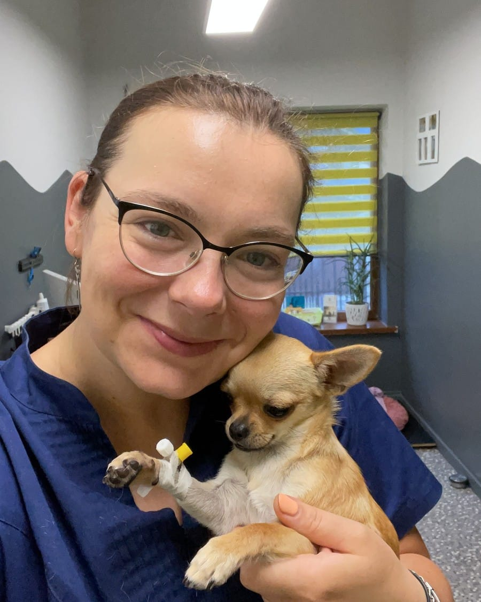
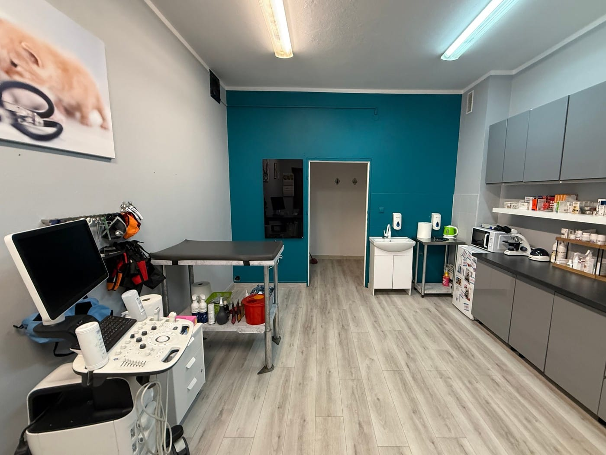
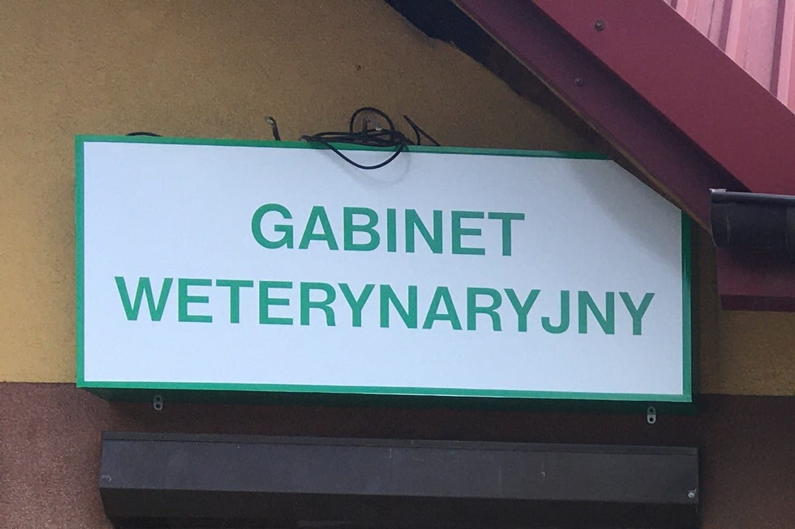

Gabinet Weterynaryjny MAG-VET w Łazach
lek. wet. Magdalena Kubiak
Specjalizacja z chorób psów i kotów. Szczepienia i odrobaczenia, leczenie, badania USG, badania krwi i podstawowa chirurgia miękka. Obowiązują zapisy na wizyty – telefonicznie albo online.
Zapisy online przez aplikację HiPets (otwiera się w nowej karcie).
Godziny otwarcia
- Pon–pt
- 9-12 i 15-19
- Sobota (co druga)
- 9-13
- Niedziela
- nieczynne
ul. Dworcowa 16, 42-450 Łazy
O gabinecie

We wrześniu 2022 roku skończyłam specjalizację z chorób psów i kotów i to właśnie interną głównie się zajmuję. Ponadto wykonuję zabiegi z zakresu chirurgii miękkiej (w obrębie jamy brzusznej i nie tylko).
Biorę udział w licznych szkoleniach i konferencjach krajowych i zagranicznych i nieustannie poszerzam swą wiedzę i umiejętności z dziedzin medycyny weterynaryjnej.
Wykształcenie i doświadczenie
- 2016 Ukończenie studiów na Wydziale Medycyny Weterynaryjnej Uniwersytetu Przyrodniczego we Wrocławiu
- 2016–2020 Praca w Przychodni For Animals w Dąbrowie Górniczej
- 06.2020 Otwarcie gabinetu MAG-VET w Łazach
- 09.2022 Ukończenie specjalizacji z chorób psów i kotów
Usługi
- Profilaktyka Szczepienia i odrobaczenia.
- Leczenie
- Badania USG
- Badania krwi
- Podstawowa chirurgia miękka
Nie świadczę wizyt domowych.
Cennik jest dostępny w gabinecie.

Godziny otwarcia
- Poniedziałek–piątek
- 9-12 i 15-19
- Sobota (co druga)
- 9-13
- Niedziela
- nieczynne
Poza godzinami pracy gabinetu
Nie prowadzę dyżuru całodobowego. Najbliższą placówką pracującą całodobowo jest Klinika AniCura Molicki w Dąbrowie Górniczej i to tam odsyłam klientów, którzy potrzebują pomocy poza godzinami pracy gabinetu.
Zapisy na wizyty
Obowiązują zapisy na wizyty. Klienci nieumówieni muszą czekać na możliwość przyjęcia między umówionymi wizytami (mają one pierwszeństwo).
Na wizytę można się umówić telefonicznie albo przez aplikację HiPets.
Najczęstsze pytania
Czy gabinet jest otwarty w niedziele?
Nie, w niedziele gabinet jest zamknięty. Gabinet jest otwarty od poniedziałku do piątku w godzinach 9-12 i 15-19 oraz w co drugą sobotę w godzinach 9-13.
Co zrobić, gdy zwierzę potrzebuje pomocy w nocy albo w niedzielę?
Gabinet nie prowadzi dyżuru całodobowego. Najbliższą placówką pracującą całodobowo jest Klinika AniCura Molicki w Dąbrowie Górniczej.
Czy możliwa jest wizyta domowa?
Nie, gabinet nie prowadzi wizyt domowych. Wizyty odbywają się w gabinecie przy ul. Dworcowej 16 w Łazach.
Jak umówić się na wizytę?
Telefonicznie pod numerem 663 488 870 albo online przez aplikację HiPets: profil gabinetu MAG-VET (otwiera się w nowej karcie). Obowiązują zapisy na wizyty: klienci nieumówieni muszą czekać na możliwość przyjęcia między umówionymi wizytami (mają one pierwszeństwo).
Kontakt i dojazd
Gabinet Weterynaryjny „MAG-VET”
lek. wet. Magdalena Kubiak
ul. Dworcowa 16
42-450 Łazy
Telefon: 663 488 870
E-mail: magvet.lazy@gmail.com

Mapa Google załaduje się po kliknięciu. Google może wtedy zapisać pliki cookies.